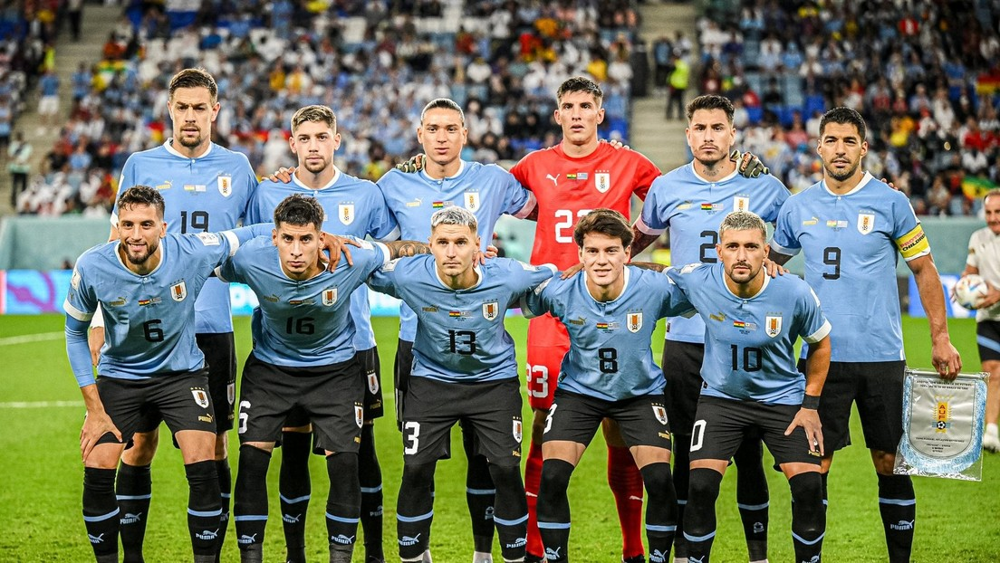

URUGUAY
La selección de fútbol de Uruguay es el equipo representativo del país en las competiciones oficiales. Su organización está a cargo de la Asociación Uruguaya de Fútbol, perteneciente a la Confederación Sudamericana de Fútbol (Conmebol). Conocida como la Celeste o los Charrúas, disputó su primer partido internacional en la ciudad de Montevideo el 20 de julio de 1902 contra la selección de fútbol de Argentina.
